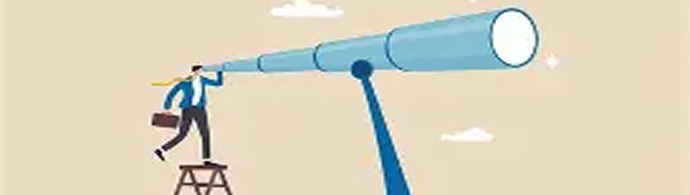
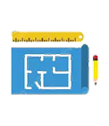
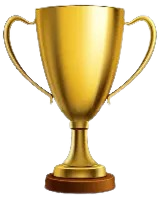
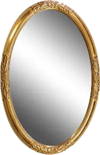
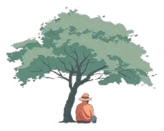

Learn continually-there’s always one more thing to learn-Steve Jobs
I am a Junior who has coding skills in areas such as HTML5, CSS, and Java Script. I use Git hub for my projects and VS code to develop websites

After Junior Year, I will be taking CART again under Game Design, then for my Senior year at Clovis I will take my last required class Econ/Gov, Computer Science, and BC calculus. Year two is me moving out to a college that has a major in game design for thr next four years, and under those four years I apply for an internship under FromSoft or Nintendo.

I have achieved the block C award 3 times, given to students who had over a 3.75 weighted GPA plus a co-curricular. I have also applied for and entered National Honors Society twice. More personally, I have a wall of wrestling medal placements.

Starting my journey in CART, I was excited yet nervous to be learning all there was to code. We would learn about HTML tags and basic CSS, and when the first project to make a website came around I didn’t feel ready. Finishing the project, I felt good but unsatisfied, as I felt I could have done more. We move on to October and we are now learning to use Figma to make a design for a mock pet-tracking website, which again I felt I could’ve done more. Luckily I was given class time to rework and fix issues in the website as an assignment until winter break. After the break we learned Java script, and our two biggest assignments for those were a palindrome checker and a task-manager app, which went well. During the month of February and March, we had an assignment where I could code for other’s budget calculators and other students could code for mine. We got to a point where I ha to code my own website, and learning and adapting code form other coders I had, I was able to complete a budget calculator somewhat on my own, and I felt proud present day, we move on to making this portfolio and a web-based game due by May

I enjoy activities such as: